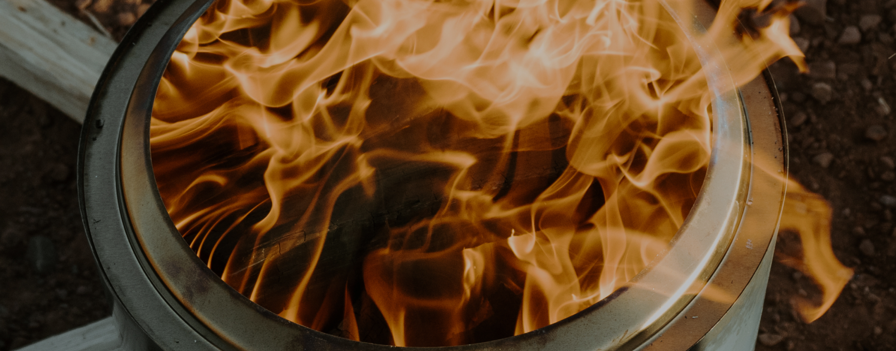
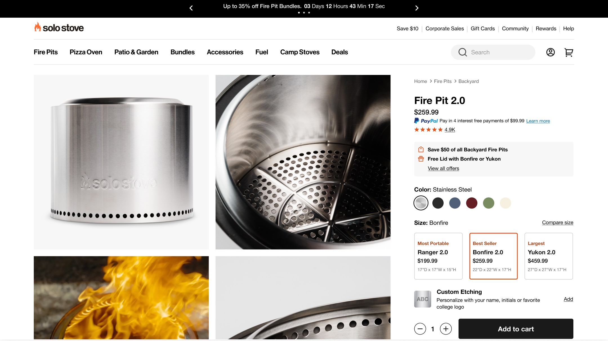
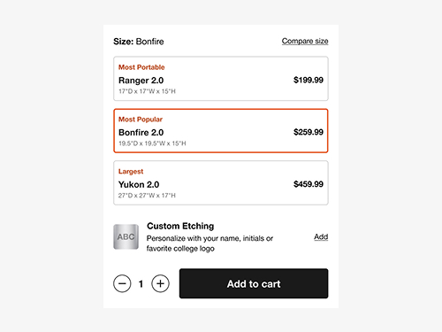
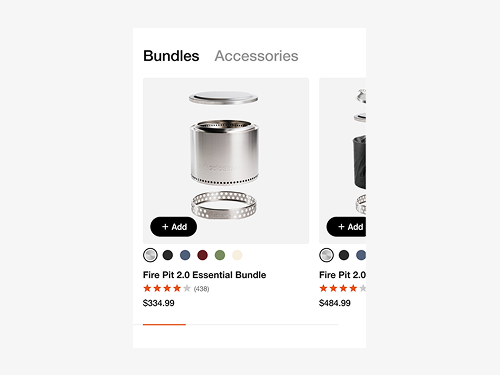
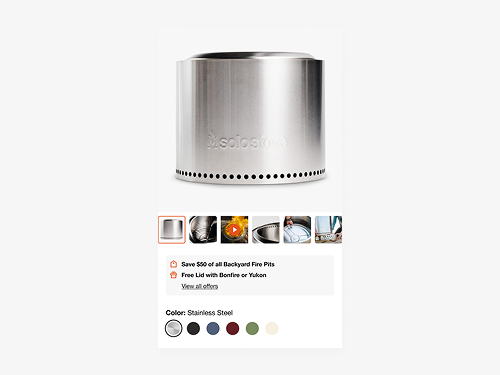
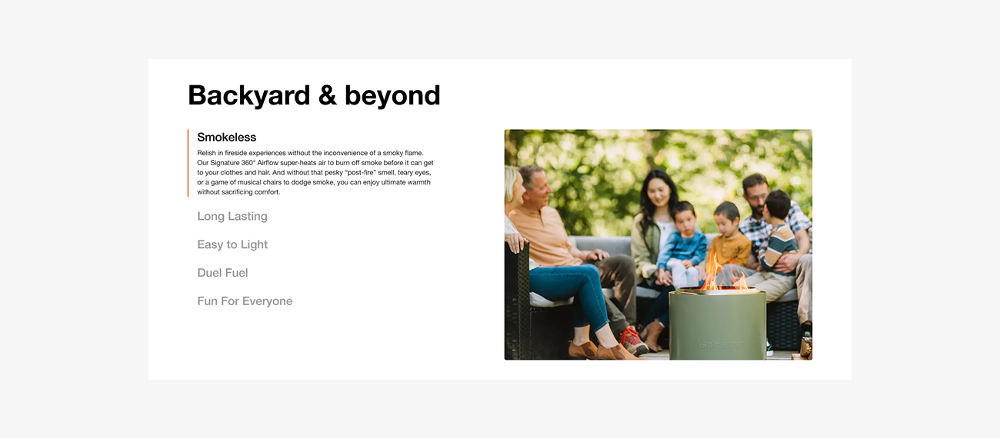
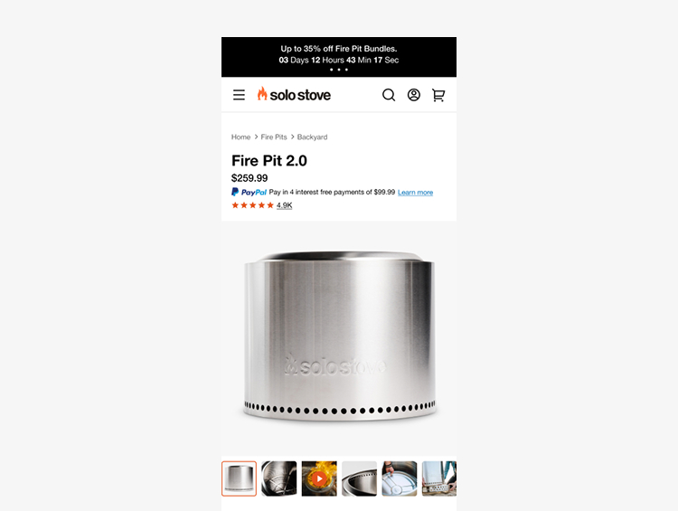
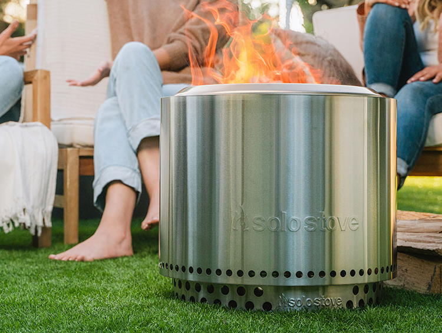

PDP Redesign
A wholesale redesign of the product detail page across six-plus product lines, built to showcase the product, put variants side by side, and make bundles part of the buy.

Solo Stove's product pages sold products in isolation. Customers comparing fire pits and bundles had to do the work themselves, across tabs, pages, and too much scrolling.
The PDP is where Solo Stove's catalog earns its keep. Fire pits, pizza ovens, outdoor furniture, and gear all sell through it, with a growing set of colorways concentrated in fire pits and tabletop fire pits. It's the page where browsing becomes buying.
The existing page got in the way of that. Products lived in isolation with no way to compare fire pits side by side. Session recordings in FullStory showed shoppers changing swatches, then scrolling back and forth to see the imagery update. It was a small friction repeated thousands of times. Bundles and accessories, the clearest lever on average order value, sat too far from the buying decision.
The redesign rebuilt the page wholesale. A premium, imagery-led layout rolled out to every product, with product-specific section variants where needed, and made room for upsells, customization, and seasonal promos without crowding the buy.
Approach
Premium and commercial aren't a tradeoff. Typography and space let one page do both.

The work



Reflection
The biggest wins came from moving old sections closer together, not from adding new ones.
FullStory made the case better than any stakeholder could. Shoppers showed us where the page fought them, one scroll at a time. Moving swatches next to the imagery and pulling bundles up under the product box were placement decisions rather than features, and they did the heavy lifting. The hardest tension was keeping the page premium while it worked harder commercially. Disciplined type and spacing answered both.



Impact
Above-the-fold imagery worked
The desktop image grid was the focus of the space redesign, and it performed well, giving the product photography more room where shoppers actually look.
Comparison replaced isolation
Featuring multiple fire pits as variants on one page gave shoppers the side-by-side view they were looking for, and the module outperformed separate pages.
Swatch-scrolling friction removed
FullStory sessions showed shoppers scrolling repeatedly between swatches and imagery. Relocating swatches beside the above-the-fold grid eliminated the round trip.